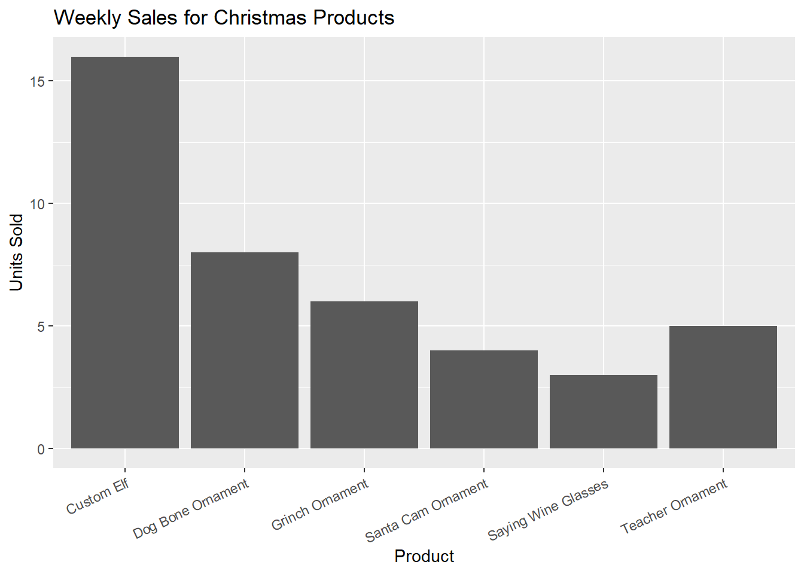
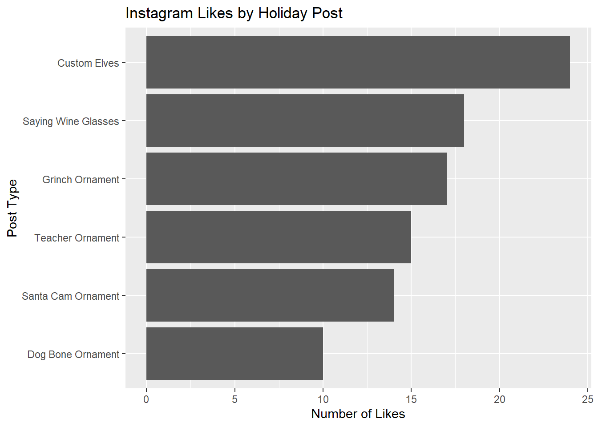

This page highlights two R example projects that connect my small Christmas business to basic marketing questions. I create and sell handmade Christmas items such as drink glasses, custom elves, and ornaments (Santa Cam, Grinch, teacher, dog bones and more) on my instagram , and business website. The below projects use simple example data to show sales and social media engagement R and ggplot2. Based on my final thoughts on this projects and the overall course, I have come to the conclusion that I should begin storing and analyzing this data in future years in order to help grow my business.
This project analyses a small example of weekly sales for my main Christmas products and creates a bar chart. The goal is to see which items are selling the most so I know what to promote and restock. This simple analysis can help with planning which products to feature in marketing posts or bundle deals/sales.
Key Skills Demonstrated (not form):
data.frame()
functiongeom_col()labs() improve readabilitytheme()# Load ggplot2
library(ggplot2)
# Create a simple data frame of weekly sales all of the products
sales_data <- data.frame(
product = c(
"Saying Wine Glasses",
"Custom Elf",
"Santa Cam Ornament",
"Grinch Ornament",
"Teacher Ornament",
"Dog Bone Ornament"
),
units_sold = c(3, 16, 4, 6, 5, 8)
)
# view the data
sales_data## product units_sold
## 1 Saying Wine Glasses 3
## 2 Custom Elf 16
## 3 Santa Cam Ornament 4
## 4 Grinch Ornament 6
## 5 Teacher Ornament 5
## 6 Dog Bone Ornament 8# Create a basic bar plot of units sold by each product
ggplot(sales_data, aes(x = product, y = units_sold)) +
geom_col() +
labs(
title = "Weekly Sales for Christmas Products",
x = "Product",
y = "Units Sold"
) +
theme(axis.text.x = element_text(angle = 25, hjust = 1))
In this sample week, which reflects an average week of sale during the holidays, the Custom Elves had the most sales. While these take the most amount of time to prepare, I’ve found that a lot of my customers like having personalized products for the Christmas season. Based on this sample data, I would plan on pre-purchasing materials for 15-20 elves each week throughout December, as this is pretty standard each holiday season. This data also brings me to the conclusion that products such as Wine Glasses (with fun ‘sayings’ on them) are not as popular, and may not be worth pursing next year. Most other products are easy to complete, and provide enough profit for it to be worth it… Even if I only sell 5 or so products per week.
This project uses a small sample of fictional Instagram post data to see which of my Christmas items get the most likes. This data includes different post types (such as custom elves, glasses, and a variety of different ornaments) and the number of likes per post. A horizontal bar chart helps me see which products generate the most engagement so I know what to include in future posts and stories.
Key Skills Demonstrated (note form):
data.frame()geom_col() to create a bar chartcoord_flip() to display categories as horizontal
bars rather than verticalreorder() so the plot is
ordered correctly and easy to readlabs() for clear titles# Load ggplot2
library(ggplot2)
# Create a simple data frame based on instagram engagement by post type
engagement_data <- data.frame(
post_type = c(
"Custom Elves",
"Saying Wine Glasses",
"Santa Cam Ornament",
"Grinch Ornament",
"Teacher Ornament",
"Dog Bone Ornament"
),
likes = c(24, 18, 14, 17, 15, 10)
)
# View the data
engagement_data## post_type likes
## 1 Custom Elves 24
## 2 Saying Wine Glasses 18
## 3 Santa Cam Ornament 14
## 4 Grinch Ornament 17
## 5 Teacher Ornament 15
## 6 Dog Bone Ornament 10# Horizontal bar chart of likes by post type
ggplot(
engagement_data,
aes(x = reorder(post_type, likes), y = likes)
) +
geom_col() +
coord_flip() +
labs(
title = "Instagram Likes by Holiday Post",
x = "Post Type",
y = "Number of Likes"
)
Based on this example data, I can see that custom elves perform better than all other products, and dog bone ornaments perform the worst. This is interesting to see, especially when considering that dog bones sell pretty well. The number of likes in the middle (18/17/14/15) could be just due to algorithms, rather than actual design/product. If I were to choose to store this information in future years, I would likely prioritize Facebook data, as I tend to have more engagement there… As well as storing averages over a long period of time, rather than just plain numbers. It’d also be interesting to consider how posts perform based on what time they are posted, or which graphic template that I use. Both of these things could be stored as data in future holiday seasons, which I will definitely have to consider.